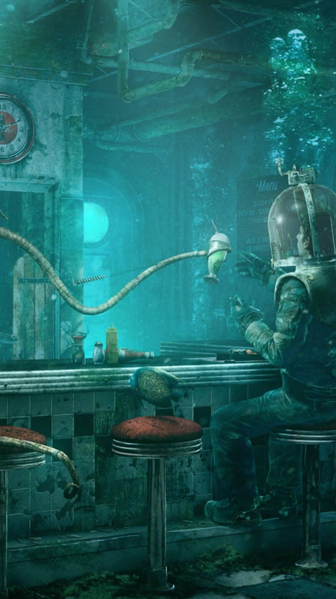

Services
Taking care of all your needs
Piper and Petal Anchialine were born in Old South Port (which had not been a port in living generations, and which was more west now than south), in a house overlooking the 110° Canal. The twins were born a hundred days apart, Piper near the end of Frimaire and Petal at the beginning of Germinal, Piper into the Cricket sodality and Petal into the Primrose; and they were born among the living—which is to say they were biological creatures, their bodies symbioses of cells animal and fungal and bacterial, distinctions less important now than in earlier times.
Piper and Petal Anchialine were born in Old South Port (which had not been a port in living generations, and which was more west now than south), in a house overlooking the 110° Canal. The twins were born a hundred days apart, Piper near the end of Frimaire and Petal at the beginning of Germinal, Piper into the Cricket sodality and Petal into the Primrose; and they were born among the living—which is to say they were biological creatures, their bodies symbioses of cells animal and fungal and bacterial, distinctions less important now than in earlier times.